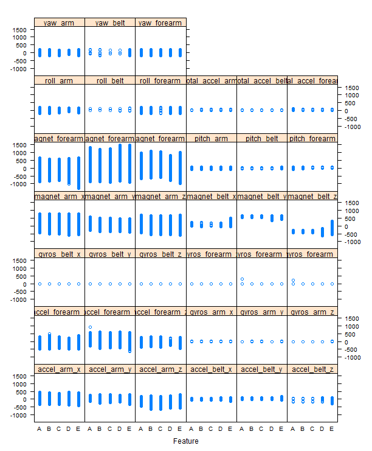
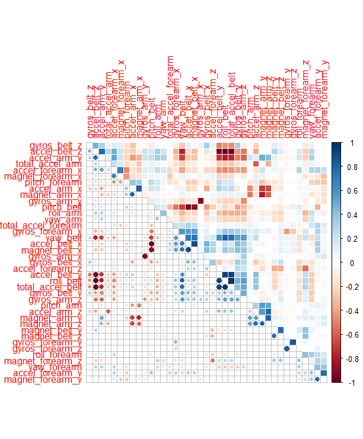
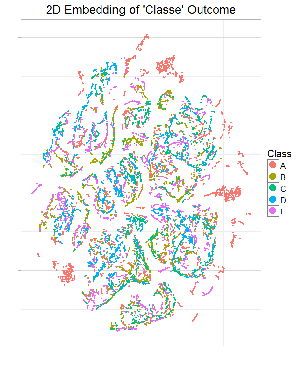
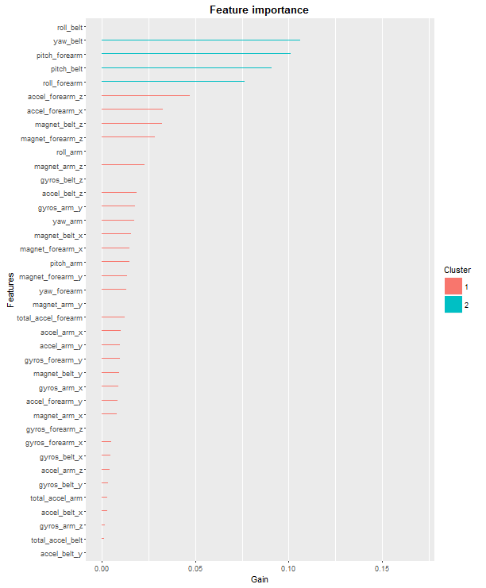

Using devices such as JawboneUp, NikeFuelBand, and Fitbitit is now possible to collect a large amount of data about personal activity relatively inexpensively. These type of devices are part of the quantified self movement - a group of enthusiasts who take measurements about themselves regularly to improve their health, to find patterns in their behavior, or because they are tech geeks. One thing that people regularly do is quantify how much of a particular activity they do, but they rarely quantify how well they do it.
In this project, the goal is to use data from accelerometers on the belt, forearm, arm, and dumbell of 6 participants. They were asked to perform barbell lifts correctly and incorrectly in 5 different ways. More information is available from the website: http://groupware.les.inf.puc-rio.br/har (see the section on the Weight Lifting Exercise Dataset).
require(caret)
require(corrplot)
require(Rtsne)
require(xgboost)
require(stats)
require(knitr)
require(ggplot2)
knitr::opts_chunk$set(cache=
For fast and accurate training the model, I choose XGBoost, an implementation of tree-based extreme gradient boosting algorithm. (As discussed in the course’s forum, this XGBoost tool is confirmed by course’s CTA to be allowed to be used in this assignment project.)
## URL of the training and testing data
train.url ="https://d396qusza40orc.cloudfront.net/predmachlearn/pml-training.csv"
test.url = "https://d396qusza40orc.cloudfront.net/predmachlearn/pml-testing.csv"
## File names
train.name = "./data/pml-training.csv"
test.name = "./data/pml-testing.csv"
## If directory does not exist, create new
if (!file.exists("./data")) {
dir.create("./data")
}
## If files does not exist, download the files
if (!file.exists(train.name)) {
download.file(train.url, destfile=train.name, method="curl")
}
if (!file.exists(test.name)) {
download.file(test.url, destfile=test.name, method="curl")
}
## After downloading the data from the data source,We can read the two csv files into two data frames
train = read.csv("E:/Projects/Practical-Machine-Learning-Course-Project/Practical-Machine-Learning-Course-Project/pml-training.csv")
test = read.csv("E:/Projects/Practical-Machine-Learning-Course-Project/Practical-Machine-Learning-Course-Project/pml-testing.csv")
dim(train)
## [1] 19622 160
dim(test)
## [1] 20 160
names(train)
## [1] "X" "user_name" ## [3] "raw_timestamp_part_1" "raw_timestamp_part_2" ## [5] "cvtd_timestamp" "new_window" ## [7] "num_window" "roll_belt" ## [9] "pitch_belt" "yaw_belt" ## [11] "total_accel_belt" "kurtosis_roll_belt" ## [13] "kurtosis_picth_belt" "kurtosis_yaw_belt" ## [15] "skewness_roll_belt" "skewness_roll_belt.1" ## [17] "skewness_yaw_belt" "max_roll_belt" ## [19] "max_picth_belt" "max_yaw_belt" ## [21] "min_roll_belt" "min_pitch_belt" ## [23] "min_yaw_belt" "amplitude_roll_belt" ## [25] "amplitude_pitch_belt" "amplitude_yaw_belt" ## [27] "var_total_accel_belt" "avg_roll_belt" ## [29] "stddev_roll_belt" "var_roll_belt" ## [31] "avg_pitch_belt" "stddev_pitch_belt" ## [33] "var_pitch_belt" "avg_yaw_belt" ## [35] "stddev_yaw_belt" "var_yaw_belt" ## [37] "gyros_belt_x" "gyros_belt_y" ## [39] "gyros_belt_z" "accel_belt_x" ## [41] "accel_belt_y" "accel_belt_z" ## [43] "magnet_belt_x" "magnet_belt_y" ## [45] "magnet_belt_z" "roll_arm" ## [47] "pitch_arm" "yaw_arm" ## [49] "total_accel_arm" "var_accel_arm" ## [51] "avg_roll_arm" "stddev_roll_arm" ## [53] "var_roll_arm" "avg_pitch_arm" ## [55] "stddev_pitch_arm" "var_pitch_arm" ## [57] "avg_yaw_arm" "stddev_yaw_arm" ## [59] "var_yaw_arm" "gyros_arm_x" ## [61] "gyros_arm_y" "gyros_arm_z" ## [63] "accel_arm_x" "accel_arm_y" ## [65] "accel_arm_z" "magnet_arm_x" ## [67] "magnet_arm_y" "magnet_arm_z" ## [69] "kurtosis_roll_arm" "kurtosis_picth_arm" ## [71] "kurtosis_yaw_arm" "skewness_roll_arm" ## [73] "skewness_pitch_arm" "skewness_yaw_arm" ## [75] "max_roll_arm" "max_picth_arm" ## [77] "max_yaw_arm" "min_roll_arm" ## [79] "min_pitch_arm" "min_yaw_arm" ## [81] "amplitude_roll_arm" "amplitude_pitch_arm" ## [83] "amplitude_yaw_arm" "roll_dumbbell" ## [85] "pitch_dumbbell" "yaw_dumbbell" ## [87] "kurtosis_roll_dumbbell" "kurtosis_picth_dumbbell" ## [89] "kurtosis_yaw_dumbbell" "skewness_roll_dumbbell" ## [91] "skewness_pitch_dumbbell" "skewness_yaw_dumbbell" ## [93] "max_roll_dumbbell" "max_picth_dumbbell" ## [95] "max_yaw_dumbbell" "min_roll_dumbbell" ## [97] "min_pitch_dumbbell" "min_yaw_dumbbell" ## [99] "amplitude_roll_dumbbell" "amplitude_pitch_dumbbell" ## [101] "amplitude_yaw_dumbbell" "total_accel_dumbbell" ## [103] "var_accel_dumbbell" "avg_roll_dumbbell" ## [105] "stddev_roll_dumbbell" "var_roll_dumbbell" ## [107] "avg_pitch_dumbbell" "stddev_pitch_dumbbell" ## [109] "var_pitch_dumbbell" "avg_yaw_dumbbell" ## [111] "stddev_yaw_dumbbell" "var_yaw_dumbbell" ## [113] "gyros_dumbbell_x" "gyros_dumbbell_y" ## [115] "gyros_dumbbell_z" "accel_dumbbell_x" ## [117] "accel_dumbbell_y" "accel_dumbbell_z" ## [119] "magnet_dumbbell_x" "magnet_dumbbell_y" ## [121] "magnet_dumbbell_z" "roll_forearm" ## [123] "pitch_forearm" "yaw_forearm" ## [125] "kurtosis_roll_forearm" "kurtosis_picth_forearm" ## [127] "kurtosis_yaw_forearm" "skewness_roll_forearm" ## [129] "skewness_pitch_forearm" "skewness_yaw_forearm" ## [131] "max_roll_forearm" "max_picth_forearm" ## [133] "max_yaw_forearm" "min_roll_forearm" ## [135] "min_pitch_forearm" "min_yaw_forearm" ## [137] "amplitude_roll_forearm" "amplitude_pitch_forearm" ## [139] "amplitude_yaw_forearm" "total_accel_forearm" ## [141] "var_accel_forearm" "avg_roll_forearm" ## [143] "stddev_roll_forearm" "var_roll_forearm" ## [145] "avg_pitch_forearm" "stddev_pitch_forearm" ## [147] "var_pitch_forearm" "avg_yaw_forearm" ## [149] "stddev_yaw_forearm" "var_yaw_forearm" ## [151] "gyros_forearm_x" "gyros_forearm_y" ## [153] "gyros_forearm_z" "accel_forearm_x" ## [155] "accel_forearm_y" "accel_forearm_z" ## [157] "magnet_forearm_x" "magnet_forearm_y" ## [159] "magnet_forearm_z" "classe"
The raw training data has 19622 rows of observations and 158 features (predictors). Column X is unusable row number. While the testing data has 20 rows and the same 158 features. There is one column of target outcome named classe.
First, extract target outcome (the activity quality) from training data, so now the training data contains only the predictors (the activity monitors).
##Target outcome (label) outcome.org = train[, "classe"] outcome = outcome.org levels(outcome)
## [1] "A" "B" "C" "D" "E"
Outcome has 5 levels in character format. Convert the outcome to numeric, because XGBoost gradient booster only recognizes numeric data.
## Convert character levels to numeric num.class = length(levels(outcome)) levels(outcome) = 1:num.class head(outcome)
## [1] 1 1 1 1 1 1 ## Levels: 1 2 3 4 5
The outcome is removed from training data.
## Remove outcome from train train$classe = NULL
The assignment rubric asks to use data from accelerometers on the belt, forearm, arm, and dumbell, so the features are extracted based on these keywords.
## Filter columns on: belt, forearm, arm, dumbell
filter = grepl("belt|arm|dumbell", names(train))
train = train[, filter]
test = test[, filter]
Instead of less-accurate imputation of missing data, remove all columns with NA values.
## Remove columns with NA, use test data as referal for NA cols.without.na = colSums(is.na(test)) == 0 train = train[, cols.without.na] test = test[, cols.without.na]
Based on the principal component analysis PCA, it is important that features have maximum variance for maximum uniqueness, so that each feature is as distant as possible (as orthogonal as possible) from the other features.
## Check for zero variance zero.var = nearZeroVar(train, saveMetrics=TRUE) zero.var
## freqRatio percentUnique zeroVar nzv ## roll_belt 1.101904 6.7781062 FALSE FALSE ## pitch_belt 1.036082 9.3772296 FALSE FALSE ## yaw_belt 1.058480 9.9734991 FALSE FALSE ## total_accel_belt 1.063160 0.1477933 FALSE FALSE ## gyros_belt_x 1.058651 0.7134849 FALSE FALSE ## gyros_belt_y 1.144000 0.3516461 FALSE FALSE ## gyros_belt_z 1.066214 0.8612782 FALSE FALSE ## accel_belt_x 1.055412 0.8357966 FALSE FALSE ## accel_belt_y 1.113725 0.7287738 FALSE FALSE ## accel_belt_z 1.078767 1.5237998 FALSE FALSE ## magnet_belt_x 1.090141 1.6664968 FALSE FALSE ## magnet_belt_y 1.099688 1.5187035 FALSE FALSE ## magnet_belt_z 1.006369 2.3290184 FALSE FALSE ## roll_arm 52.338462 13.5256345 FALSE FALSE ## pitch_arm 87.256410 15.7323412 FALSE FALSE ## yaw_arm 33.029126 14.6570176 FALSE FALSE ## total_accel_arm 1.024526 0.3363572 FALSE FALSE ## gyros_arm_x 1.015504 3.2769341 FALSE FALSE ## gyros_arm_y 1.454369 1.9162165 FALSE FALSE ## gyros_arm_z 1.110687 1.2638875 FALSE FALSE ## accel_arm_x 1.017341 3.9598410 FALSE FALSE ## accel_arm_y 1.140187 2.7367241 FALSE FALSE ## accel_arm_z 1.128000 4.0362858 FALSE FALSE ## magnet_arm_x 1.000000 6.8239731 FALSE FALSE ## magnet_arm_y 1.056818 4.4439914 FALSE FALSE ## magnet_arm_z 1.036364 6.4468454 FALSE FALSE ## roll_forearm 11.589286 11.0895933 FALSE FALSE ## pitch_forearm 65.983051 14.8557741 FALSE FALSE ## yaw_forearm 15.322835 10.1467740 FALSE FALSE ## total_accel_forearm 1.128928 0.3567424 FALSE FALSE ## gyros_forearm_x 1.059273 1.5187035 FALSE FALSE ## gyros_forearm_y 1.036554 3.7763735 FALSE FALSE ## gyros_forearm_z 1.122917 1.5645704 FALSE FALSE ## accel_forearm_x 1.126437 4.0464784 FALSE FALSE ## accel_forearm_y 1.059406 5.1116094 FALSE FALSE ## accel_forearm_z 1.006250 2.9558659 FALSE FALSE ## magnet_forearm_x 1.012346 7.7667924 FALSE FALSE ## magnet_forearm_y 1.246914 9.5403119 FALSE FALSE ## magnet_forearm_z 1.000000 8.5771073 FALSE FALSE
There is no features without variability (all has enough variance). So there is no feature to be removed further.
Plot the relationship between features and outcome. From the plot below, each features has relatively the same distribution among the 5 outcome levels (A, B, C, D, E).
featurePlot(train, outcome.org, "strip")

Plot a correlation matrix between features.
A good set of features is when they are highly uncorrelated (orthogonal) each others. The plot below shows average of correlation is not too high, so I choose to not perform further PCA preprocessing.
corrplot.mixed(cor(train), lower="circle", upper="color",
tl.pos="lt", diag="n", order="hclust", hclust.method="complete")

A tSNE (t-Distributed Stochastic Neighbor Embedding) visualization is 2D plot of multidimensional features, that is multidimensional reduction into 2D plane. In the tSNE plot below there is no clear separation of clustering of the 5 levels of outcome (A, B, C, D, E). So it hardly gets conclusion for manually building any regression equation from the irregularity.
## t-Distributed Stochastic Neighbor Embedding
tsne = Rtsne(as.matrix(train), check_duplicates=FALSE, pca=TRUE,
perplexity=30, theta=0.5, dims=2)
## Read the 19622 x 39 data matrix successfully! ## Using no_dims = 2, perplexity = 30.000000, and theta = 0.500000 ## Computing input similarities... ## Building tree... ## - point 0 of 19622 ## - point 10000 of 19622 ## Done in 5.90 seconds (sparsity = 0.005774)! ## Learning embedding... ## Iteration 50: error is 106.633840 (50 iterations in 9.74 seconds) ## Iteration 100: error is 97.718591 (50 iterations in 10.70 seconds) ## Iteration 150: error is 82.962726 (50 iterations in 7.74 seconds) ## Iteration 200: error is 78.169002 (50 iterations in 7.45 seconds) ## Iteration 250: error is 3.803975 (50 iterations in 7.43 seconds) ## Iteration 300: error is 3.086925 (50 iterations in 7.28 seconds) ## Iteration 350: error is 2.675746 (50 iterations in 7.20 seconds) ## Iteration 400: error is 2.385472 (50 iterations in 7.20 seconds) ## Iteration 450: error is 2.168501 (50 iterations in 7.13 seconds) ## Iteration 500: error is 2.000504 (50 iterations in 7.15 seconds) ## Iteration 550: error is 1.866260 (50 iterations in 7.15 seconds) ## Iteration 600: error is 1.755478 (50 iterations in 7.16 seconds) ## Iteration 650: error is 1.662327 (50 iterations in 7.18 seconds) ## Iteration 700: error is 1.583451 (50 iterations in 7.21 seconds) ## Iteration 750: error is 1.515918 (50 iterations in 7.22 seconds) ## Iteration 800: error is 1.458107 (50 iterations in 7.28 seconds) ## Iteration 850: error is 1.407774 (50 iterations in 7.28 seconds) ## Iteration 900: error is 1.363542 (50 iterations in 7.31 seconds) ## Iteration 950: error is 1.324365 (50 iterations in 7.39 seconds) ## Iteration 999: error is 1.290877 (50 iterations in 7.23 seconds) ## Fitting performed in 151.42 seconds.
embedding = as.data.frame(tsne$Y)
embedding$Class = outcome.org
s= ggplot(embedding, aes(x=V1, y=V2, color=Class)) +
geom_point(size=1.25) +
guides(colour=guide_legend(override.aes=list(size=6))) +
xlab("") + ylab("") +
ggtitle("t-SNE 2D Embedding of 'Classe' Outcome") +
theme_light(base_size=20) +
theme(axis.text.x=element_blank(),
axis.text.y=element_blank())
print(s)

Now build a machine learning model to predict activity quality (classe outcome) from the activity monitors (the features or predictors) by using XGBoost extreme gradient boosting algorithm.
XGBoost supports only numeric matrix data. Converting all training, testing and outcome data to matrix.
## Convert data to matrix train.matrix = as.matrix(train) mode(train.matrix) = "numeric" test.matrix = as.matrix(test) mode(test.matrix) = "numeric" ## Convert outcome from factor to numeric matrix ## xgboost takes multi-labels in [0, numOfClass) y = as.matrix(as.integer(outcome)-1)
## xgboost parameters
param <- list("objective" = "multi:softprob", # multiclass classification
"num_class" = num.class, # number of classes
"eval_metric" = "merror", # evaluation metric
"nthread" = 8, # number of threads to be used
"max_depth" = 16, # maximum depth of tree
"eta" = 0.3, # step size shrinkage
"gamma" = 0, # minimum loss reduction
"subsample" = 1, # part of data instances to grow tree
"colsample_bytree" = 1, # subsample ratio of columns when constructing each tree
"min_child_weight" = 12 # minimum sum of instance weight needed in a child
)
Expected error rate is less than 1% for a good classification. Do cross validation to estimate the error rate using 4-fold cross validation, with 200 epochs to reach the expected error rate of less than 1%.
## Set random seed, for reproducibility
set.seed(1234)
## k-fold cross validation, with timing
nround.cv = 200
system.time( bst.cv <- xgb.cv(param=param, data=train.matrix, label=y,
nfold=4, nrounds=nround.cv, prediction=TRUE, verbose=FALSE) )
## user system elapsed ## 266.87 15.02 149.65
Elapsed time is around 150 seconds (2.5 minutes).
tail(bst.cv$dt)
## train.merror.mean train.merror.std test.merror.mean test.merror.std ## 1: 0 0 0.006013 0.000947 ## 2: 0 0 0.006013 0.000947 ## 3: 0 0 0.006115 0.001164 ## 4: 0 0 0.006064 0.001095 ## 5: 0 0 0.006115 0.001140 ## 6: 0 0 0.006166 0.001180
From the cross validation, choose index with minimum multiclass error rate. Index will be used in the model training to fulfill expected minimum error rate of < 1%.
## Index of minimum merror min.merror.idx = which.min(bst.cv$dt[, test.merror.mean]) min.merror.idx
## [1] 106
## Minimum merror bst.cv$dt[min.merror.idx,]
## train.merror.mean train.merror.std test.merror.mean test.merror.std ## 1: 0 0 0.005962 0.001107
Best cross-validation’s minimum error rate test.merror.mean is around 0.006 (0.6%), happened at 106th iteration.
Tabulates the cross-validation’s predictions of the model against the truths.
## Get CV's prediction decoding pred.cv = matrix(bst.cv$pred, nrow=length(bst.cv$pred)/num.class, ncol=num.class) pred.cv = max.col(pred.cv, "last") ## Confusion matrix confusionMatrix(factor(y+1), factor(pred.cv))
## Confusion Matrix and Statistics ## ## Reference ## Prediction 1 2 3 4 5 ## 1 5567 8 5 0 0 ## 2 12 3770 15 0 0 ## 3 0 24 3382 16 0 ## 4 2 0 23 3190 1 ## 5 0 2 3 10 3592 ## ## Overall Statistics ## ## Accuracy : 0.9938 ## 95% CI : (0.9926, 0.9949) ## No Information Rate : 0.2844 ## P-Value [Acc > NIR] : < 2.2e-16 ## ## Kappa : 0.9922 ## Mcnemar's Test P-Value : NA ## ## Statistics by Class: ## ## Class: 1 Class: 2 Class: 3 Class: 4 Class: 5 ## Sensitivity 0.9975 0.9911 0.9866 0.9919 0.9997 ## Specificity 0.9991 0.9983 0.9975 0.9984 0.9991 ## Pos Pred Value 0.9977 0.9929 0.9883 0.9919 0.9958 ## Neg Pred Value 0.9990 0.9979 0.9972 0.9984 0.9999 ## Prevalence 0.2844 0.1939 0.1747 0.1639 0.1831 ## Detection Rate 0.2837 0.1921 0.1724 0.1626 0.1831 ## Detection Prevalence 0.2844 0.1935 0.1744 0.1639 0.1838 ## Balanced Accuracy 0.9983 0.9947 0.9921 0.9952 0.9994
Confusion matrix shows concentration of correct predictions is on the diagonal, as expected.
The average accuracy is 99.38%, with error rate is 0.62%. So, expected error rate of less than 1% is fulfilled.
Fit the XGBoost gradient boosting model on all of the training data.
## Real model fit training, with full data
system.time( bst <- xgboost(param=param, data=train.matrix, label=y,
nrounds=min.merror.idx, verbose=0) )
## user system elapsed ## 56.92 2.78 35.05
Time elapsed is around 35 seconds.
## xgboost predict test data using the trained model pred <- predict(bst, test.matrix) head(pred, 10)
## [1] 4.610718e-04 9.972614e-01 1.705230e-03 2.652793e-04 3.069591e-04 ## [6] 9.986942e-01 8.453168e-04 4.312960e-04 8.232127e-06 2.090017e-05
## Decode prediction pred = matrix(pred, nrow=num.class, ncol=length(pred)/num.class) pred = t(pred) pred = max.col(pred, "last") pred.char = toupper(letters[pred])
(The prediction result pred.char is not displayed intentionally due to Honour Code, because it is the answer of the “project submission” part.)
## Get the trained model model = xgb.dump(bst, with.stats=TRUE) ## Get the feature real names names = dimnames(train.matrix)[[2]] ## Compute feature importance matrix importance_matrix = xgb.importance(names, model=bst) # Plot t = xgb.plot.importance(importance_matrix) print(t)

Feature importance plot is useful to select only best features with highest correlation to the outcome(s). To improve model fitting performance (time or overfitting), less important features can be removed.
path = "./answer"
pml_write_files = function(x) {
n = length(x)
for(i in 1: n) {
filename = paste0("problem_id_", i, ".txt")
write.table(x[i], file=file.path(path, filename),
quote=FALSE, row.names=FALSE, col.names=FALSE)
}
}
pml_write_files(pred.char)